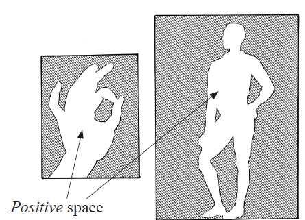
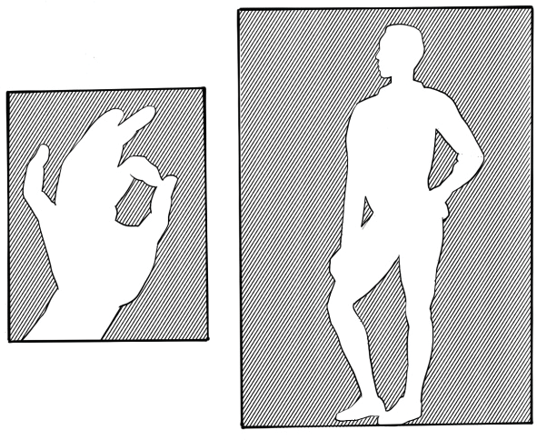

Positive space: This is a space occupied by the shape or form of an object. Positive space is an area of interest or main focus in artwork. Figure 1.34 shows the positive space.

Negative space: This is an unoccupied space around and within the object presented. It helps an artist break a composition into different parts to capture the subject matter with its appropriate proportion and balance. Figure 1.35 shows the negative space in a drawing.

Value
This is an element of art that shows the lightness or darkness scale of tones or colour. This element can be expressed by using a value scale with different ranges